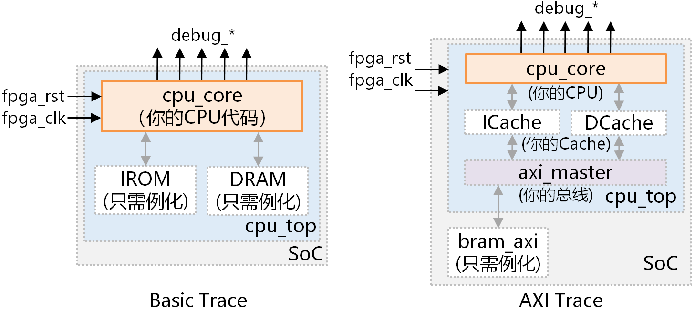
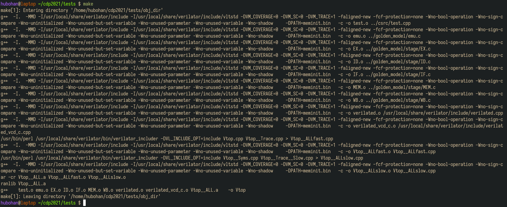
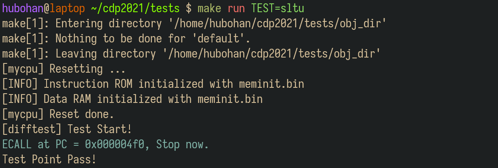
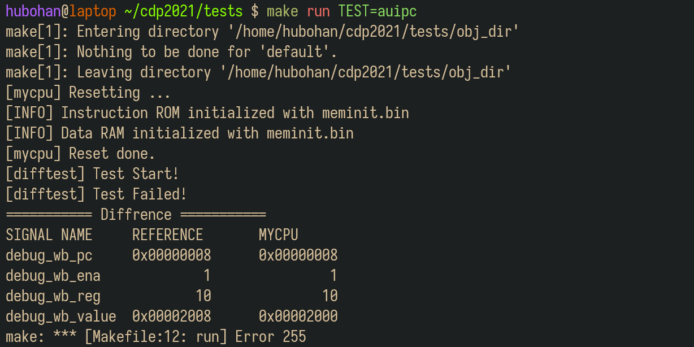
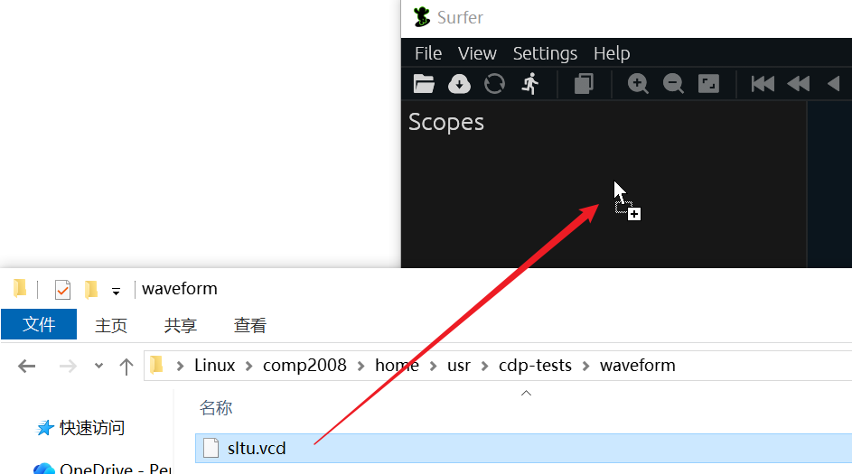
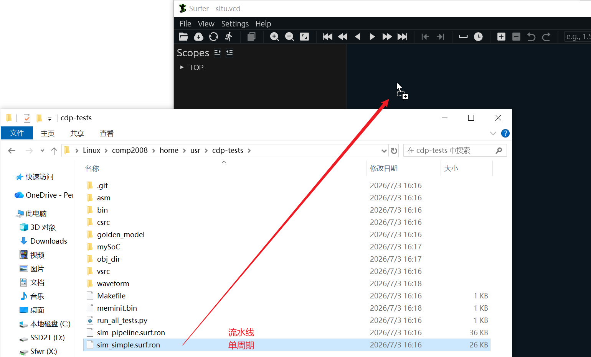
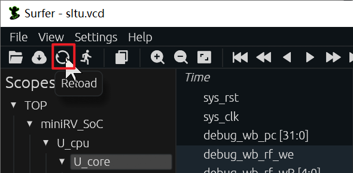
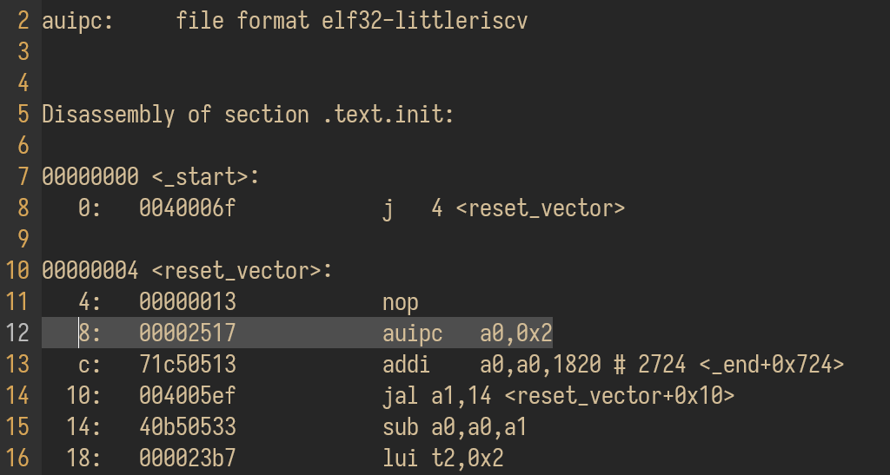
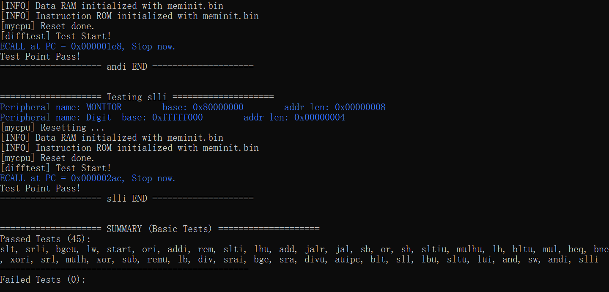
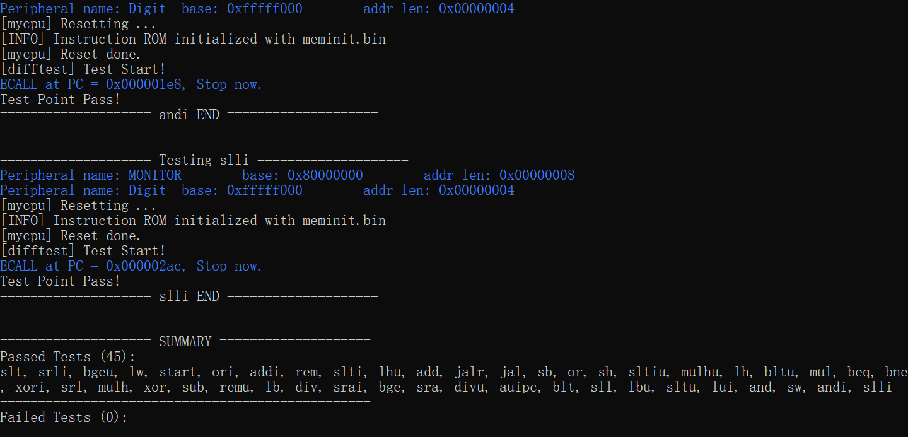

测试框架说明
1. 关于实验环境
Trace测试使用Linux系统部署测试环境，我们提供了三种实验环境供同学们选择：
（1）实验室虚拟机
实验室的台式机均已提前安装好基于WSL2虚拟机的实验环境，推荐同学们直接使用。
WSL2虚拟机最方便的地方之一就是可以快速实现系统之间的文件拷贝。
（2）远程实验平台
远程实验平台的资源和性能有限，不要在上课期间使用，否则服务器负载能力有限，会导致使用体验很差。
远程实验平台已经将Trace测试的运行环境部署在实验中心的服务器上，我们把所有依赖的配置都已经事先搭建完毕。无论你的电脑性能如何，无论你是在宿舍、实验室还是自习室，只要你还能连上校园网，你就能完成你的实验。具体使用方式详见附录A：远程实验环境使用指南。
温馨提示
虽然我们已经做了一些方案保证远程环境的可靠性，但在某些特殊情况下，也不能确保不出故障，为安全起见，建议同学们将代码及时上传到git仓库或者下载到本地保存。
（3）自行部署实验环境
如果要自行安装环境，推荐安装WSL2虚拟机。安装说明见附录B：虚拟机使用指南。
感兴趣的同学也可以尝试在自己的电脑上从零开始安装实验环境，体验一下自己动手的乐趣：）具体搭建方法详见附录C：实验环境部署指南。
2. 了解测试框架
下面以WSL2虚拟机为例，介绍Trace测试框架使用方法。
首先在桌面上打开wsl2distromanager，并启动comp2008虚拟机。
如果是在T2612上课的同学
在桌面上找到Debian虚拟机的快捷方式，双击即可启动虚拟机。
在虚拟机终端输入并执行下列命令，以拉取测试框架代码：
1 | |
关于miniLA 
实现miniLA指令集的同学，拉取测试框架时，请执行以下命令：
1 | |
cdp-tests目录的文件结构如下图所示。
.
├── bin # 指令测试用例，用于初始化内存
│ ├── add.bin
│ ├── .......
│ ├── xor.bin
│ └── xori.bin
├── asm # 指令测试用例的反汇编文件，用于阅读汇编代码来辅助调试
│ ├── add.dump
│ ├── .......
│ ├── xor.dump
│ └── xori.dump
├── csrc # 测试驱动框架，包括比对逻辑
│ ├── dut.h
│ └── test.cpp
├── golden_model # C语言编写的CPU行为模型
│ ├── emu.c
│ ├── include/...
│ └── stage/...
├── waveform #【运行测试后生成】的波形文件，用于查看波形来辅助调试
│ ├── add.vcd
│ ├── ........
│ └── xori.vcd
├── Makefile
├── mySoC # 你实现的SoC的Verilog代码，放在此目录下，仅拷贝HDL代码，不拷贝IP核
│ ├── miniRV(或LA)_SoC.v
| ├── defines.vh
│ └── ......
├── vsrc # 仿真需要用到的其他文件
| ├── ram.v # Basic测试的主存模块，不含总线
│ └── bram_axi.v # AXI测试的主存模块
├── run_all_tests.py # 自动化测试脚本
├── Makefile
├── sim_simple.surf.ron # 单周期CPU的Surfer波形配置文件
└── sim_pipeline.surf.ron # 流水线CPU的Surfer波形配置文件
测试的原理是差分测试，即比对标准模型和待测模型之间的区别。在实验中，标准模型就是golden_model下使用C语言实现的CPU模型，而待测模块就是你所实现的CPU。驱动测试的代码逻辑位于csrc文件夹中，分别让标准模型和待测模型执行同一条指令，比对他们执行的结果，来确定你的CPU是否实现正确。你只需要关注mySoC目录，暂时不需要关注其他目录，你需要将自己实现的CPU的Verilog代码粘贴到这个目录下。
3. 添加待测试代码
mySoC目录存放待测试CPU、总线控制器以及SoC顶层模块及其对外的连线等代码文件。运行测试时，需要将整个SoC工程的代码复制到该目录下。拷贝代码时，需要注意：
-
把Vivado工程目录的
src/rtl下的所有源文件拷贝到cdp-tests/mySoC目录。不要拷贝ip文件夹，也 不要拷贝IP核相关文件。 -
如果使用WSL2虚拟机，在Windows下拷贝源文件到虚拟机并刷新界面，有时会出现许多带有“
Zone.Identifier”后缀的文件。这些文件需要全部删除，否则测试无法运行。删除方法是在文件资源管理器的搜索框搜索“Zone.Identifier”，然后快捷键 Ctrl+A 全选后删除。 -
保证
mySoC目录下的架构是miniRV_SoC（或miniLA_SoC）包含cpu_top，然后cpu_top包含cpu_core，且这些模块的模块名、实例名，以及cpu_core的接口信号均不要改动。课程提供的模板工程默认满足要求，不要改动。 -
不要修改所有源文件中任何出现
RUN_TRACE宏定义的代码。 -
不要修改所有源文件中任何在行内出现
/* verilator public */的代码，并且不要删除或修改此注释。 -
在Trace测试框架中，SoC顶层模块的复位信号
fpga_rst是高电平复位。 -
系统复位后首条指令的地址是
0x00000000。
Trace测试框架会根据SoC是否支持AXI总线，自动进行相应架构的测试，如下图所示：

Basic Trace只会测试CPU内核，而AXI Trace会将CPU连同ICache、DCache和总线一起测试。
Trace测试框架只会测试主存访问，不会测试外设访问
如果SoC通过了AXI Trace测试，但下板测试失败，则首先应排查Uncached访问和外设访问的实现是否存在问题。
Trace测试框架使用cpu_core.v文件末尾的两组Trace信号来获取待测试CPU的部分结构状态。第一组带有“debug_wb_”前缀的信号用于获取写回寄存器的信息，第二组带有“debug_mem_”前缀的则用于获取写访存的信息。单周期CPU的demo工程已提前连接好两组Trace信号：
| cpu_core.v | |
|---|---|
252 253 254 255 256 257 258 259 260 261 262 263 264 265 266 267 268 269 270 | |
在开发流水线CPU及SoC时，请参照上述代码中的注释，自行连接两组Trace信号。注意，对于同一条指令，每一组信号只能有效一个时钟周期，特别是debug_wb_rf_we和debug_mem_we。
对于流水线，一定是连接WB阶段、MEM阶段的信号吗？
不一定。第一组Trace信号的作用是获取写回寄存器的信息，而第二组则是为了获取写访存的信息。因此，你的流水线CPU在哪个阶段写回寄存器，就把哪个阶段的信号连接到第一组Trace信号。同理，流水线CPU在哪个阶段发出写访存请求，就把哪个阶段的信号连接到第二组Trace信号。
运行AXI Trace测试时，第二组Trace信号没报错，代表Store指令的写访存操作一定没问题吗？
不一定。第二组Trace信号只能帮助Trace测试框架判断CPU发出的写请求是否正确，但写请求后续传输到DCache、总线、存储器的路径上都有可能出错，导致写访存失败，从而数据没有被正确写入主存。出现这种这种情况时，Trace测试会在后续相同访存地址的Load指令处报错。
若运行Basic Trace测试，需要保证代码中实例化了IROM、DRAM（模板工程默认已实例化）：
IROM U_irom ( // 模块名必须是IROM
.clka (...),
.addra (...),
.douta (...)
);
DRAM U_dram ( // 模块名必须是DRAM
.clka (...),
.addra (...),
.douta (...),
.wea (...),
.dina (...)
);
若运行AXI Trace测试，需要保证代码中实例化了bram_axi：
bram_axi U_bram ( // 模块名必须是bram_axi
.s_aclk (...),
.s_aresetn (...),
.s_axi_awid (...),
.s_axi_awaddr (...),
.s_axi_awlen (...),
.s_axi_awsize (...),
.s_axi_awburst (...),
.s_axi_awready (...),
.s_axi_awvalid (...),
.s_axi_wdata (...),
.s_axi_wstrb (...),
.s_axi_wvalid (...),
.s_axi_wlast (...),
.s_axi_wready (...),
.s_axi_bready (...),
.s_axi_bresp (...),
.s_axi_bvalid (...),
.s_axi_arid (...),
.s_axi_araddr (...),
.s_axi_arlen (...),
.s_axi_arsize (...),
.s_axi_arburst (...),
.s_axi_arready (...),
.s_axi_arvalid (...),
.s_axi_rdata (...),
.s_axi_rvalid (...),
.s_axi_rlast (...),
.s_axi_rready (...),
.s_axi_rresp (...)
);
4. 运行测试
把待测试代码拷贝到 cdp-tests / mySoC 目录后，在虚拟机终端执行下列命令进入cdp-tests目录：
1 | |
然后继续在终端执行make命令，从而编译代码，生成可执行的仿真模型。

4.1 运行单个测试
所有的测试用例都位于bin文件夹下，输入下列命令即可获取测试用例名称：
1 | |
每个测试用例的名称都和某条指令的名称相同，但测试用例内部使用了多条不同的指令。
第一次运行测试时，推荐选择单个测试运行。例如，我们想运行sltu指令的测试用例，则在终端执行命令：
1 | |

打印出“Test Point Pass”之后，就代表该指令的测试用例通过了。
如果发生了错误，就会打印如下所示的信息：

在上图中，“REFERENCE”下的信号是正确实现的参考信号值，“MYCPU”下的则是待测试CPU给出的信号。比对这两组信号，可以快速确定错误是由哪一条指令执行时引起的，然后结合反汇编和仿真波形进行调试。
4.2 查看波形
运行某个测试之后，测试框架会在waveform文件夹下生成对应的.vcd波形文件。.vcd格式的波形文件可以使用GTKWave、Surfer等常用的波形查看器查看。
打开桌面上的Surfer工具，然后直接把waveform文件夹下的.vcd波形文件拖拽到Surfer，如下图所示。

然后把cdp-tests目录下的.surf.ron格式的波形配置文件拖拽到Surfer，如下图所示。

修改HDL代码并重新编译、重新运行测试后，只需点击Surfer左上角工具栏的刷新按钮，即可查看最新的波形，如下图所示。

更多Surfer工具的使用方法，请查看附录D. Surfer使用指南。
4.3 查看反汇编
反汇编文件在asm文件夹下。在上述的auipc的测试例子中，可见在PC等于0x8处出现了错误，写回值有误。通过查看和分析auipc.dump中的反汇编指令，可以帮助我们找到出错的指令。

请根据出错点，结合波形和反汇编代码，完成调试。
4.4 批量运行测试
cdp-tests目录下提供run_all_tests.py的脚本来进行批量测试。
首先确保已执行过make命令，且编译没有报错，然后执行下列命令：
1 | |
脚本运行结束后，会在最末尾输出测试总结报告。该报告会列出当前代码已通过和未通过的测试数量及测试名称。对于未通过的测试，请结合waveform目录下的波形和asm目录下的反汇编代码进行调试。
通过Basic Trace测试的示意图：

通过AXI Trace测试的示意图：
